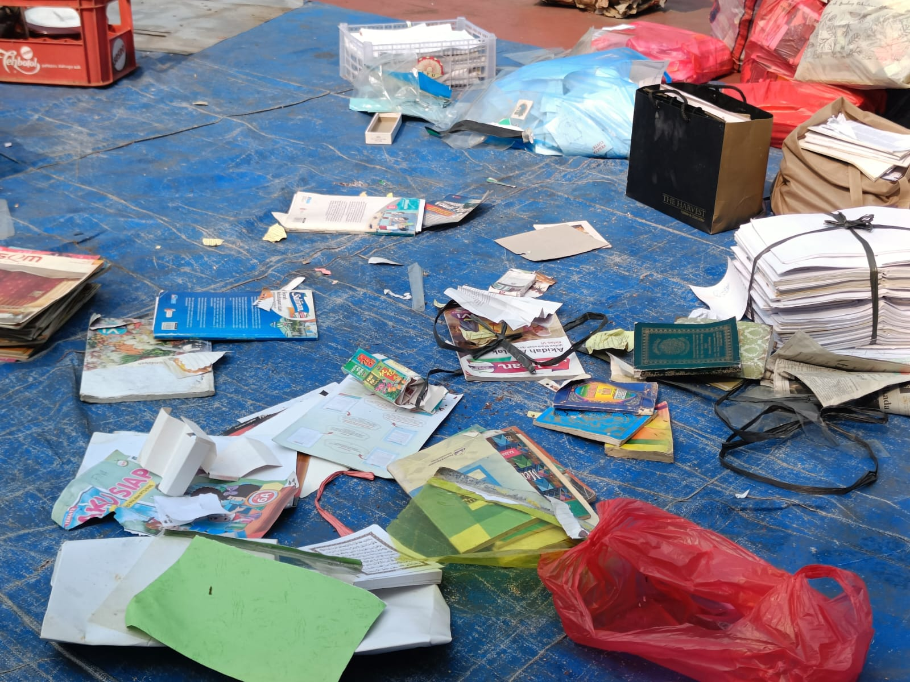
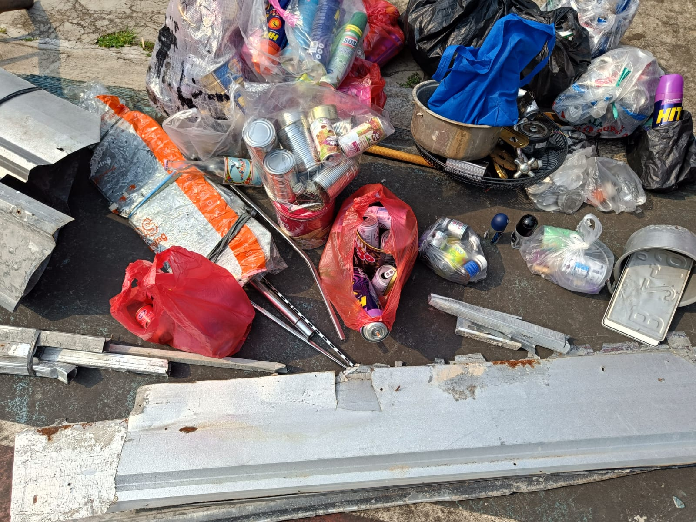
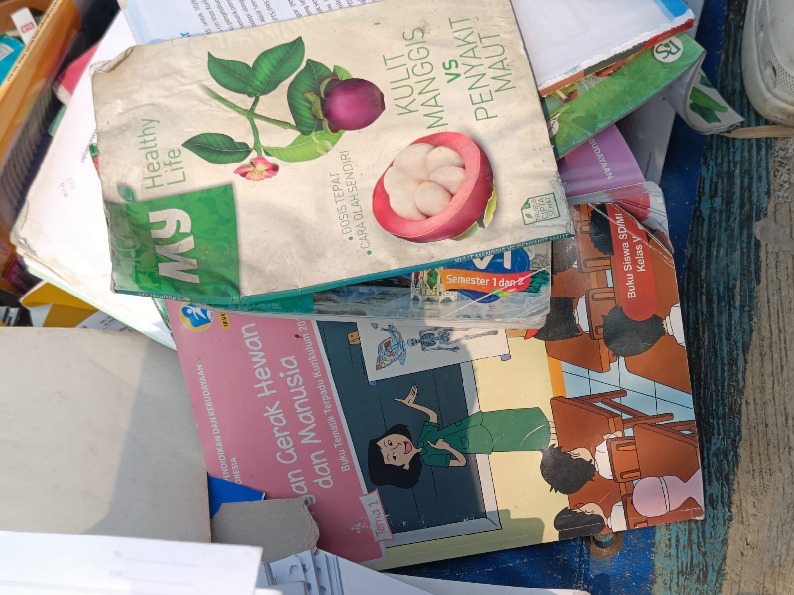
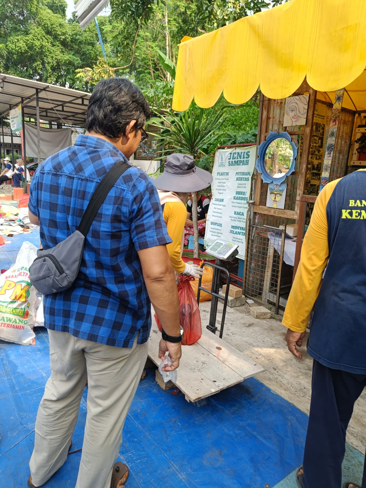

Bank sampah adalah sebuah sistem pengelolaan sampah berbasis komunitas yang berfungsi sebagai tempat pengumpulan dan pengelolaan sampah yang memiliki nilai ekonomi. Konsep ini bekerja mirip seperti bank pada umumnya, namun yang ditabung bukan uang, melainkan sampah yang dapat didaur ulang atau memiliki nilai jual.



